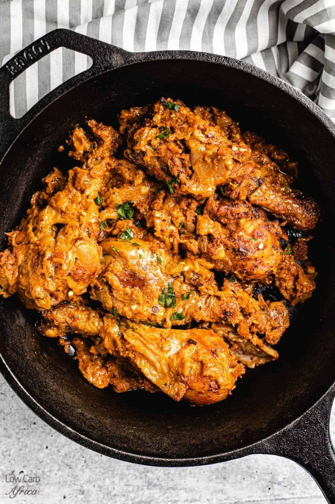

poulet moambe
Le poulet à la moambe est un plat riche et savoureux, apprécié pour sa sauce onctueuse et ses saveurs
profondes. La pâte de moambe donne à la sauce une texture crémeuse et un goût unique qui se marie bien avec
les divers accompagnements.
Ingrédients :
- 1 poulet (environ 1,5 kg), découpé en morceaux
- 1 tasse de pâte de moambe (ou pâte de noix de palme)
- 2 oignons
- 3 tomates
- 3 gousses d'ail
- 1 poivron vert
- 1 bouquet de persil ou de feuilles de céleri
- 1 piment (facultatif)
- - 2 cuillères à soupe d'huile de palme rouge ou d'huile de votre choix
- Sel et poivre au goût
- 1 cube de bouillon (facultatif)
- 2 tasses d'eau
Instructions :
- Nettoyez et découpez le poulet en morceaux. Assaisonnez les morceaux de poulet avec du sel, du poivre,
et un peu de paprika si vous le souhaitez.
- Hachez finement les oignons, les tomates, le poivron, l'ail, et le piment (si utilisé)
- Ciselez le persil ou les feuilles de céleri.
- Dans une grande marmite ou une poêle profonde, faites chauffer l'huile de palme à feu moyen.
- Ajoutez les morceaux de poulet et faites-les dorer de tous les côtés.
- Une fois le poulet doré, ajoutez les oignons et l'ail dans la marmite et faites revenir jusqu'à ce
qu'ils soient translucides.
- Ajoutez les tomates, le poivron, et le piment, et faites revenir jusqu'à ce que les tomates soient bien
réduites et que les légumes soient tendres
- Incorporez la pâte de moambe en mélangeant bien pour l'incorporer dans la sauce.
- Ajoutez les 2 tasses d'eau dans la marmite et mélangez bien. Ajoutez le cube de bouillon (si utilisé) et
assaisonnez avec du sel et du poivre.
- Couvrez et laissez mijoter à feu doux pendant environ 30 à 45 minutes, jusqu'à ce que le poulet soit
bien cuit et tendre. La sauce doit épaissir et bien enrober les morceaux de poulet.
- Ajoutez le persil ou les feuilles de céleri ciselés dans la sauce quelques minutes avant la fin de la
cuisson pour ajouter de la fraîcheur et de la couleur.
- Servez le poulet à la moambe chaud, accompagné de riz, de fufu, de bananes plantains, ou de manioc.